A curated archive of 37+ international press coverages, keynote symposiums, executive podcasts, Times Square NYC billboard features, and technical interviews shaping enterprise AI architecture and cybersecurity.
Interactive visualizations breaking down publication distribution, core research domains, and longitudinal reach velocity.
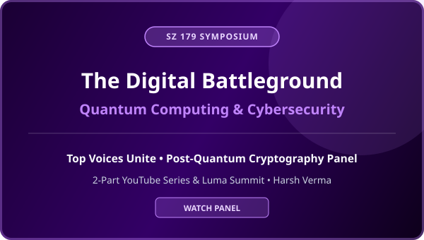
Symposium Panel 2025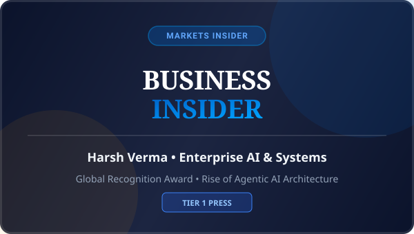
Tier 1 Press 2026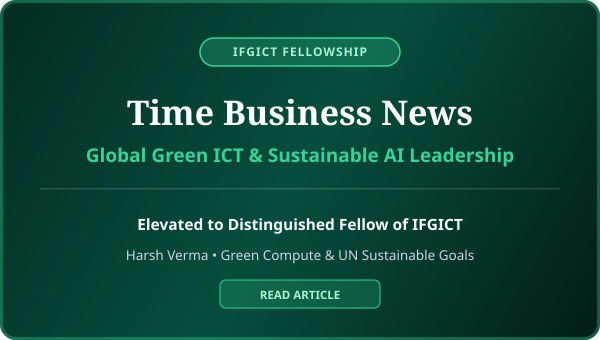
Fellowship Feature 2026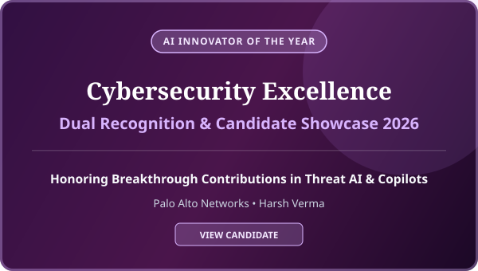
Official Showcase 2026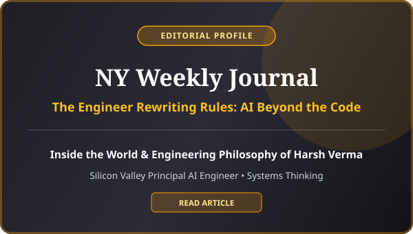
Editorial Profile 2026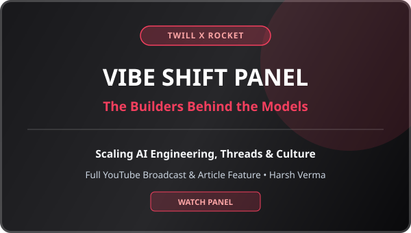
Panel & Podcast 2026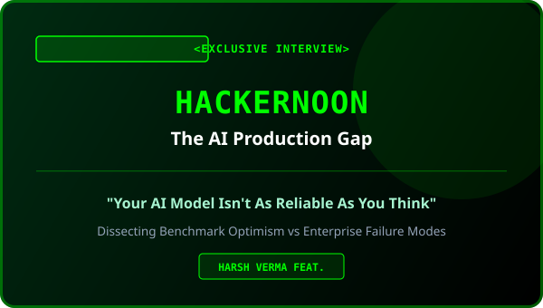
Tech Interview 2026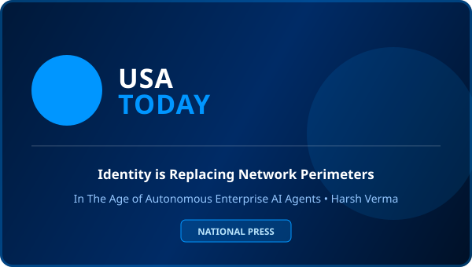
Tier 1 Press 2026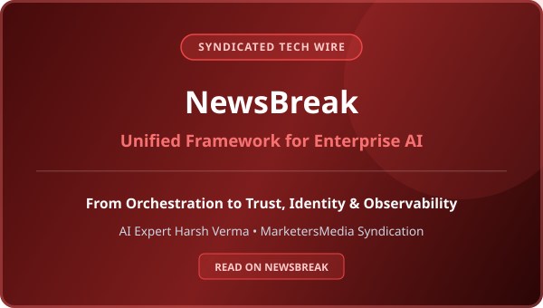
Syndicated Tech News 2026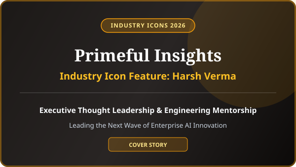
Cover Icon Feature 2026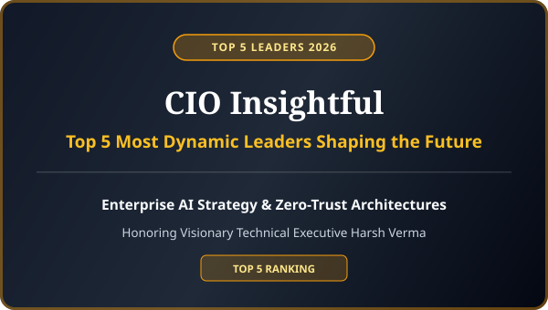
Executive Ranking 2026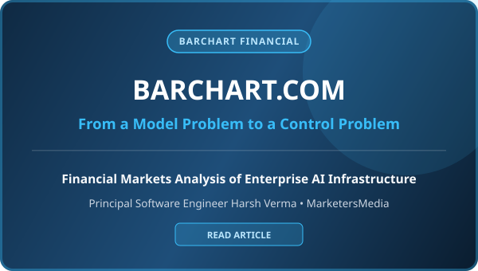
Financial Analysis 2026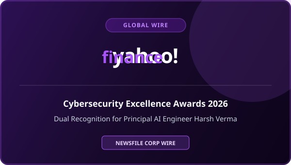
Tier 1 Wire 2026Looking for official speaker bios, high-res portraits, executive quotes, or keynote bookings?